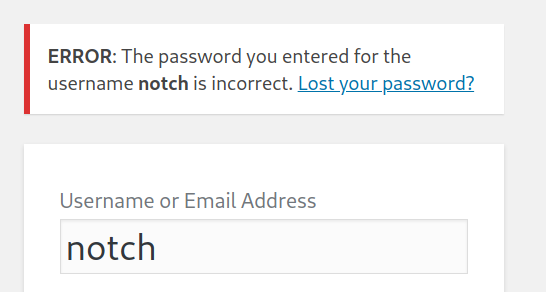

Blocky
对找到的jar文件进行反编译，会找到一组凭据，该凭据被重复利用于ssh，因此能够以notch身份登陆系统，而且notch可以以root用户执行任何命令，直接切换至root用户即可
~~~~~~~~~~~~~~~~~~~~~~~~~~~~~~~~~
◇ nmap
◇ TCP/80
▪ jadx反编译
▪ phpmyadmin登录
◇ Shell as Notch
◇ Shell as root
~~~~~~~~~~~~~~~~~~~~~~~~~~~~~~~~~
nmap
nmap -sC -sV -p- -oA nmap 10.10.10.37
PORT STATE SERVICE VERSION
21/tcp open ftp ProFTPD 1.3.5a
22/tcp open ssh OpenSSH 7.2p2 Ubuntu 4ubuntu2.2 (Ubuntu Linux; protocol 2.0)
| ssh-hostkey:
| 2048 d6:2b:99:b4:d5:e7:53:ce:2b:fc:b5:d7:9d:79:fb:a2 (RSA)
| 256 5d:7f:38:95:70:c9:be:ac:67:a0:1e:86:e7:97:84:03 (ECDSA)
|_ 256 09:d5:c2:04:95:1a:90:ef:87:56:25:97:df:83:70:67 (ED25519)
80/tcp open http Apache httpd 2.4.18
|_http-title: Did not follow redirect to http://blocky.htb
|_http-server-header: Apache/2.4.18 (Ubuntu)
8192/tcp closed sophos
25565/tcp open minecraft Minecraft 1.11.2 (Protocol: 127, Message: A Minecraft Server, Users: 0/20)
TCP/80
看到80端口开启，先去看看网页相关信息，无法访问，提示302重定向到了http://blocky.htb

那就在/etc/hosts中添加对应的域名解析，添加情况如下
访问成功，可以看到目标网站使用的cms是wordpress
那么就使用wordpress进一步进行探索
wpscan --url http://blocky.htb
在此同时，浏览网站查看是否有什么有价值的信息，该博客网站只发了一条帖子，这个NOTCH很值得关注，说不定就是一个用户名
右下角有一个login，点击后跳转至一个登陆表单，输入veg/123456提示invalid username，输入notch/123456提示密码不正确，有理由相信notch为用户之一，可以采取用户名爆破，然后根据已有用户名进行暴力破解

先针对notch进行暴力破解，既然是wordpress，就用wpscan爆破试试
wpscan --url http://blocky.htb -P /usr/share/wordlists/rockyou.txt
可是爆破非常的慢，用gobuster扫描一下目录，看看有没有其他可以利用的
gobuster dir -u http://blocky.htb/ -w /usr/share/wordlists/dirbuster/directory-list-2.3-medium.txt -t 50 -x php -o gobuster
jadx反编译
在plugins中有两个jar文件，先下载下来，还发现了wordpress 的登录窗口，phpmyadmin的登录窗口，剩下的都没有什么，尝试查看两个jar文件，使用jadx工具对其进行反编译，发现了数据库的用户名和密码
得到了用户名和密码，尝试使用root/notch，以及密码8YsqfCTnvxAUeduzjNSXe22登录ftp，ssh，wordpress以及phpmyadmin的后台
phpmyadmin登录
没办法登录到wordpress后台，但是可以使用root/8YsqfCTnvxAUeduzjNSXe22登录phpmyadmin后台，登陆成功后，重点关注wordpress内容
在wp_users中可以发现加密密码

在http://scriptserver.mainframe8.com/网站中，选择Wordpress password hasher生成一个密码，然后替换上图中的密码，点击edit编辑，修改成功后即可使用新密码登录wordpress

现在利用notch/vegetable即可登录wordpress后台，随便找个地方，然后写入webshell即可，后面就是一样的了
Shell as Notch
经过尝试，使用notch/8YsqfCTnvxAUeduzjNSXe22成功通过ssh连接系统，但是我们目前的权限只是notch
Shell as root
然后发现notch用户可以以root身份执行所有命令，那么直接切换至root用户即可